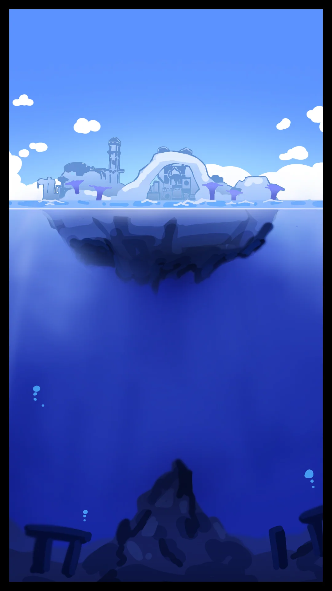
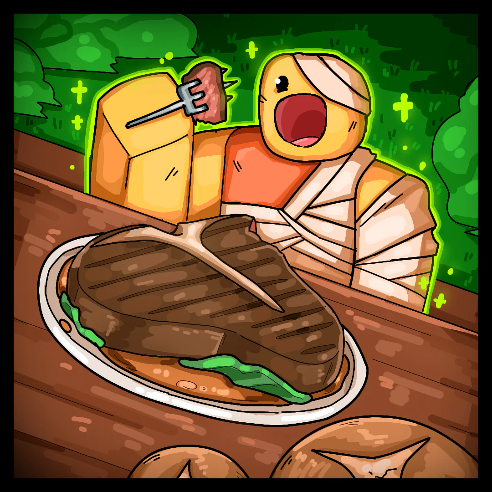
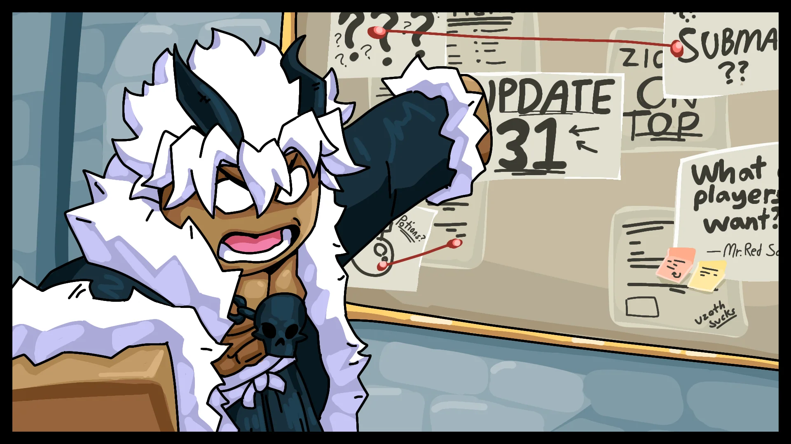
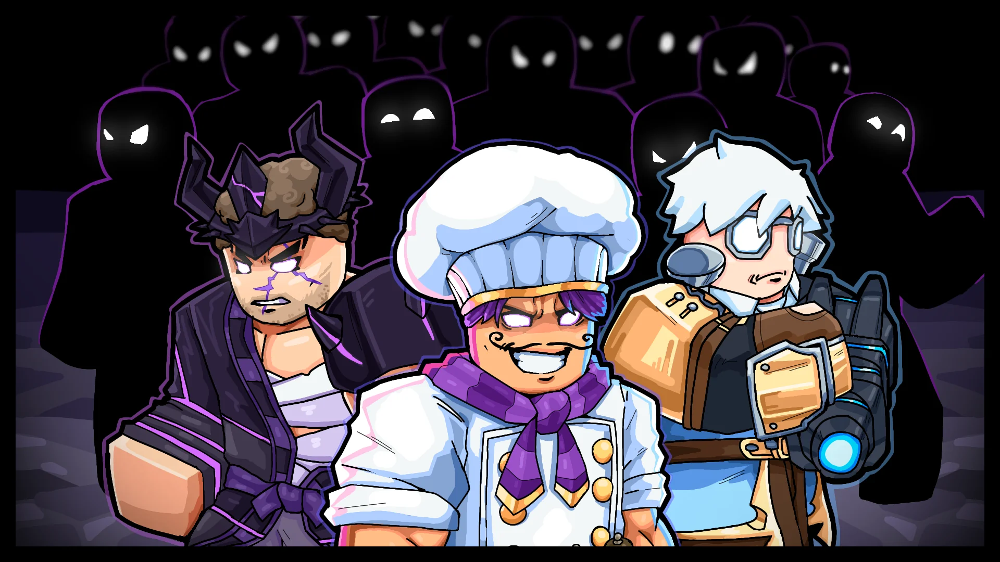

The Blox Bulletin
Là où les Légendes et les Mises à Jour se Rencontrent
Plongée dans le Lore : Les Secrets de l'Avant-Poste Tiki

L'Avant-Poste Tiki était autrefois vivant de rires et de musique — des lanternes se balançant au-dessus de marchés au clair de lune, des tambours résonnant le long du rivage. Mais quand les grands froids sont arrivés, il a disparu.
On dit que c'est le Léviathan qui en est responsable. Sa présence a glacé les eaux et invité les contrebandiers à débarquer. Apportant la peur, les couvre-feux, et une ombre sur l'âme de l'île.
Maintenant, avec le Tyran Aigle vaincu, l'espoir renaît.
Le Chef de l'Avant-Poste Tiki croit que des vérités plus profondes se cachent en dessous — les ruines antiques de la civilisation Tiki originelle, longtemps dissimulées sous la mer. Si elles étaient découvertes, elles pourraient restaurer la fierté que Tiki possédait autrefois.
Vétérans et prodiges parcourent désormais l'île, chassant un futur qui repose peut-être sous les vagues mêmes qui ont failli l'engloutir.
Rapport des Rangers : La Nourriture comme Rituel
Par Twiggy Logleaf
Quelque chose d'étrange — et de délicieux — s'agite dans les campements.
Après une longue journée à débroussailler et transporter des vivres, un campeur — encore meurtri d'une mauvaise chute près de Ridge Hollow — a décidé de se reposer à l'ancienne : en cuisinant un dîner au-dessus d'un feu de camp. Utilisant uniquement des ingrédients récoltés plus tôt dans la journée — des poivrons sauvages, du poisson de rivière et une poignée de racines terreuses — le campeur a concocté un repas simple. Mais ce qui s'en est suivi était tout sauf ordinaire.
« Je jure que j'ai senti la douleur disparaître après les premières bouchées ! » dit-il. « C'était comme si mon corps savait que je l'avais mérité. Meilleur repas que j'aie jamais fait — et je n'ai même pas mis de sel ! Fou, non ? »
Le personnel du parc a remarqué. D'autres campeurs ont commencé à expérimenter leurs propres mélanges culinaires, croyant que la saveur née de l'effort possède une sorte de charme restaurateur.
Certains commencent à se demander — peut-être qu'il y a plus à ces recettes que le simple goût.
Donnez Votre Avis : Sondage Communautaire
Par l'Équipe Admin
Qu'est-ce qui compte le PLUS pour vous en tant que joueur ? Quelles fonctionnalités voulez-vous voir prioritaires dans les prochaines mises à jour ?
Votez ci-dessous. Nous révélerons les choix les plus populaires dans le prochain Bulletin !
Sondage Blox Fruits #001
Choisissez vos 3 priorités pour les prochaines mises à jour !
La Refonte des Boss Héritage a Commencé
Par Blotniral OmnikCes derniers temps, nous avons entrepris de retravailler certains boss — comme vous avez peut-être pu le remarquer. Il ne s'agit pas seulement d'améliorations visuelles, mais aussi de leur donner une identité plus affirmée au sein de cet univers. Ces boss n'étaient pas à la hauteur du potentiel que nous avions imaginé il y a quelques années, et il est temps qu'ils le soient enfin.
Certains bénéficieront de modèles mis à jour, d'autres de mouvements entièrement nouveaux, et dans bien des cas, de mécaniques de combat inédites pour rendre chaque affrontement unique. L'objectif n'est pas de les rendre beaucoup plus difficiles, mais de les rendre plus authentiques, mémorables et dignes des mers qu'ils sillonnent.
Ce n'est que le début ! Notre objectif est de faire de chaque boss un élément à part entière de l'histoire de ce monde, avec des combats qui se distinguent non seulement par leur difficulté, mais aussi par leur personnalité, leur thème et l'expérience qu'ils offrent.
